2022 National 5 Biology - Paper 1 questions
Source: Scottish Qualifications Authority (SQA) / Qualifications Scotland. This is a StemInteract HTML companion, not an official HTML edition. Selectable text is supplied alongside original page images. Use the images or original PDF for equations, powers, fractions, vector notation, tables and diagrams; text extraction cannot fully preserve mathematical layout.
Jump to a question
PDF page 1
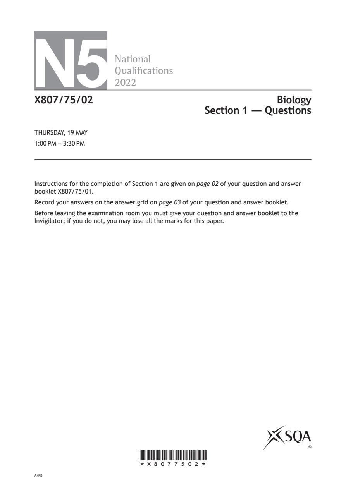
Selectable page text
N5
National
Qualications
2022
X807/75/02 Biology
Section 1 — Questions
THURSDAY, 19 MAY
1:00 PM – 3:30 PM
Instructions for the completion of Section 1 are given on page 02 of your question and answer
booklet X807/75/01.
Record your answers on the answer grid on page 03 of your question and answer booklet.
Before leaving the examination room you must give your question and answer booklet to the
Invigilator; if you do not, you may lose all the marks for this paper.
©
*X8077502*
A/PBPDF page 2
Paper 1, Question 1Paper 1, Question 2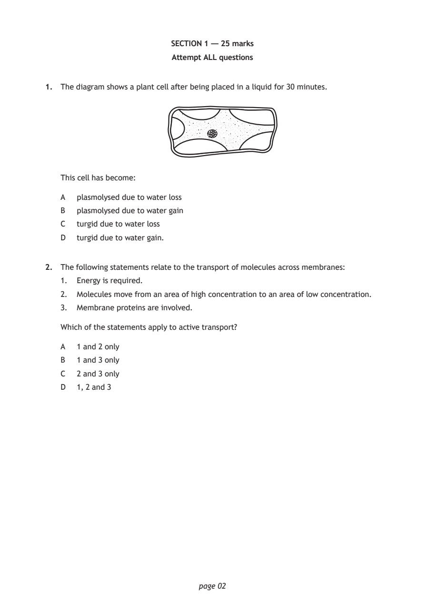
Selectable page text
SECTION 1 — 25 marks
Attempt ALL questions
1. The diagram shows a plant cell after being placed in a liquid for 30 minutes.
This cell has become:
A plasmolysed due to water loss
B plasmolysed due to water gain
C turgid due to water loss
D turgid due to water gain.
2. The following statements relate to the transport of molecules across membranes:
1. Energy is required.
2. Molecules move from an area of high concentration to an area of low concentration.
3. Membrane proteins are involved.
Which of the statements apply to active transport?
A 1 and 2 only
B 1 and 3 only
C 2 and 3 only
D 1, 2 and 3
page 02PDF page 3
Paper 1, Question 3Paper 1, Question 4Paper 1, Question 5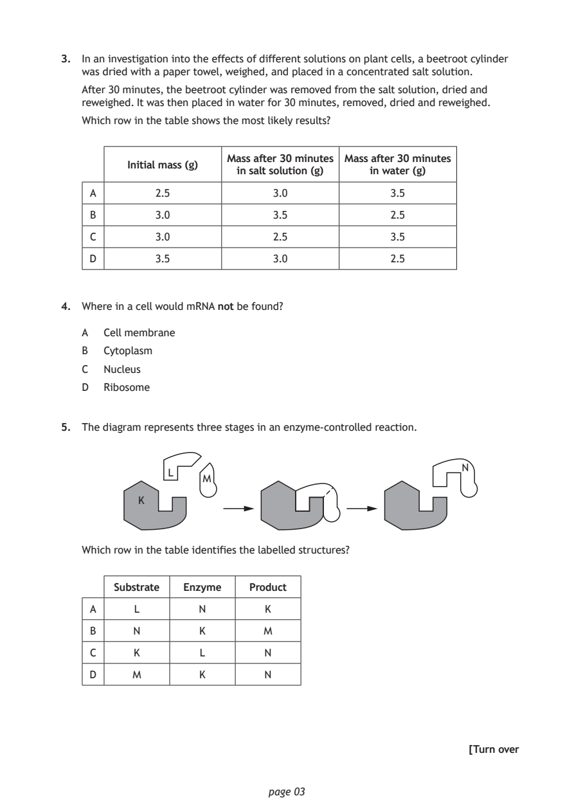
Selectable page text
3. In an investigation into the effects of different solutions on plant cells, a beetroot cylinder
was dried with a paper towel, weighed, and placed in a concentrated salt solution.
After 30 minutes, the beetroot cylinder was removed from the salt solution, dried and
reweighed. It was then placed in water for 30 minutes, removed, dried and reweighed.
Which row in the table shows the most likely results?
Mass after 30 minutes Mass after 30 minutes
Initial mass (g)
in salt solution (g) in water (g)
A 2.5 3.0 3.5
B 3.0 3.5 2.5
C 3.0 2.5 3.5
D 3.5 3.0 2.5
4. Where in a cell would mRNA not be found?
A Cell membrane
B Cytoplasm
C Nucleus
D Ribosome
5. The diagram represents three stages in an enzyme-controlled reaction.
N
L
M
K
Which row in the table identifies the labelled structures?
Substrate Enzyme Product
A L N K
B N K M
C K L N
D M K N
[Turn over
page 03PDF page 4
Paper 1, Question 6Paper 1, Question 7Paper 1, Question 8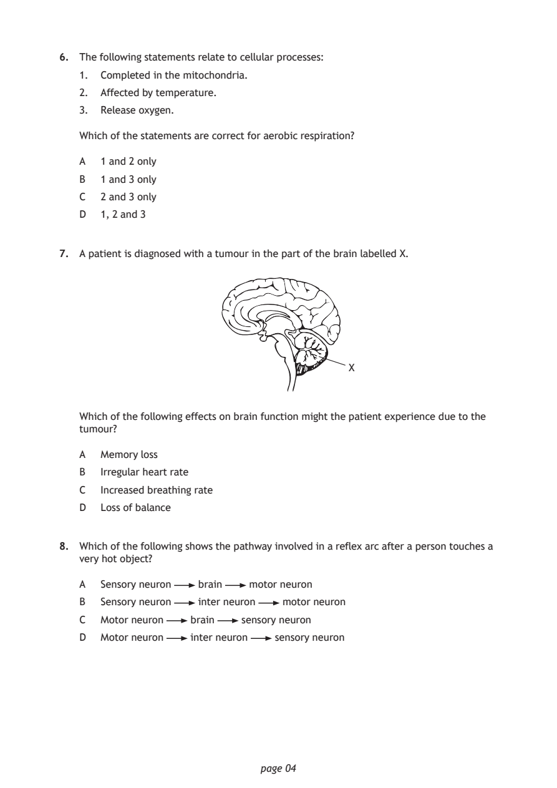
Selectable page text
6. The following statements relate to cellular processes:
1. Completed in the mitochondria.
2. Affected by temperature.
3. Release oxygen.
Which of the statements are correct for aerobic respiration?
A 1 and 2 only
B 1 and 3 only
C 2 and 3 only
D 1, 2 and 3
7. A patient is diagnosed with a tumour in the part of the brain labelled X.
X
Which of the following effects on brain function might the patient experience due to the
tumour?
A Memory loss
B Irregular heart rate
C Increased breathing rate
D Loss of balance
8. Which of the following shows the pathway involved in a reflex arc after a person touches a
very hot object?
A Sensory neuron brain motor neuron
B Sensory neuron inter neuron motor neuron
C Motor neuron brain sensory neuron
D Motor neuron inter neuron sensory neuron
page 04PDF page 5
Paper 1, Question 9Paper 1, Question 10Paper 1, Question 11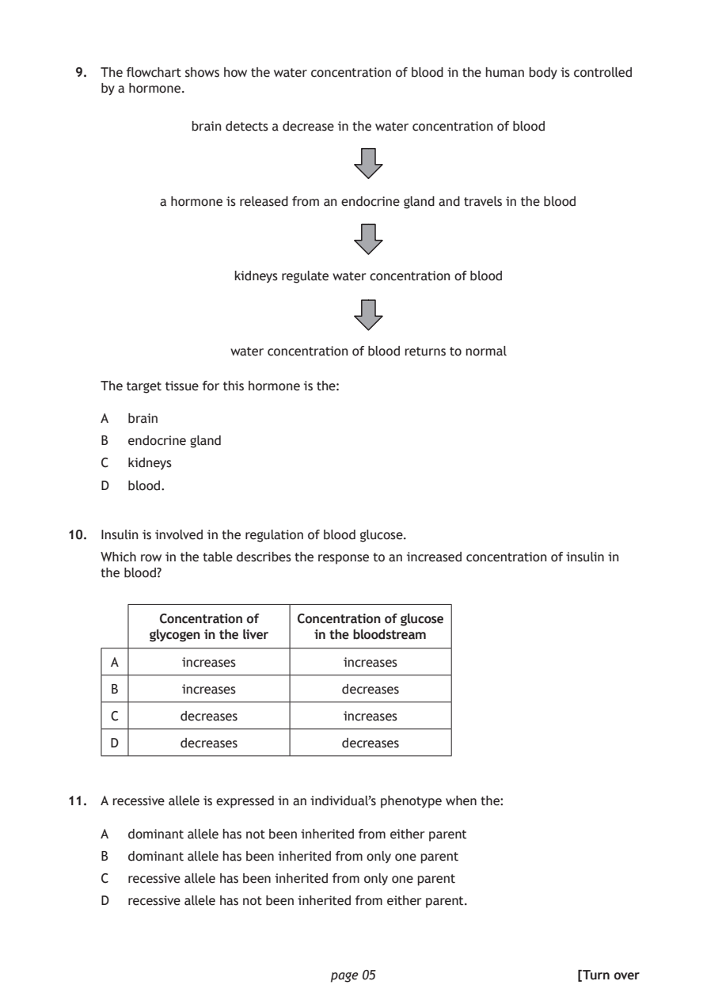
Selectable page text
9. The flowchart shows how the water concentration of blood in the human body is controlled
by a hormone.
brain detects a decrease in the water concentration of blood
a hormone is released from an endocrine gland and travels in the blood
kidneys regulate water concentration of blood
water concentration of blood returns to normal
The target tissue for this hormone is the:
A brain
B endocrine gland
C kidneys
D blood.
10. Insulin is involved in the regulation of blood glucose.
Which row in the table describes the response to an increased concentration of insulin in
the blood?
Concentration of Concentration of glucose
glycogen in the liver in the bloodstream
A increases increases
B increases decreases
C decreases increases
D decreases decreases
11. A recessive allele is expressed in an individual’s phenotype when the:
A dominant allele has not been inherited from either parent
B dominant allele has been inherited from only one parent
C recessive allele has been inherited from only one parent
D recessive allele has not been inherited from either parent.
page 05 [Turn overPDF page 6
Paper 1, Question 12Paper 1, Question 13Paper 1, Question 14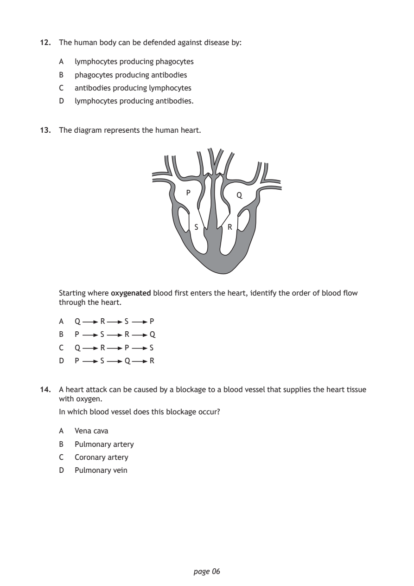
Selectable page text
12. The human body can be defended against disease by:
A lymphocytes producing phagocytes
B phagocytes producing antibodies
C antibodies producing lymphocytes
D lymphocytes producing antibodies.
13. The diagram represents the human heart.
P
Q
S R
Starting where oxygenated blood first enters the heart, identify the order of blood flow
through the heart.
A Q R S P
B P S R Q
C Q R P S
D P S Q R
14. A heart attack can be caused by a blockage to a blood vessel that supplies the heart tissue
with oxygen.
In which blood vessel does this blockage occur?
A Vena cava
B Pulmonary artery
C Coronary artery
D Pulmonary vein
page 06PDF page 7
Paper 1, Question 15Paper 1, Question 16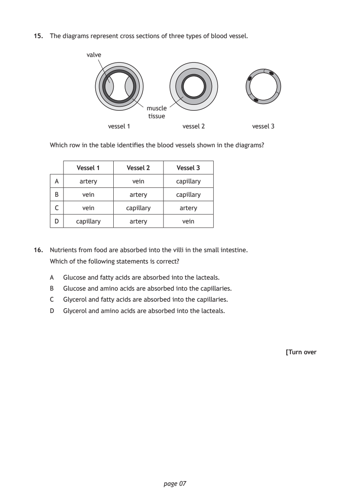
Selectable page text
15. The diagrams represent cross sections of three types of blood vessel.
valve
muscle
tissue
vessel 1 vessel 2 vessel 3
Which row in the table identifies the blood vessels shown in the diagrams?
Vessel 1 Vessel 2 Vessel 3
A artery vein capillary
B vein artery capillary
C vein capillary artery
D capillary artery vein
16. Nutrients from food are absorbed into the villi in the small intestine.
Which of the following statements is correct?
A Glucose and fatty acids are absorbed into the lacteals.
B Glucose and amino acids are absorbed into the capillaries.
C Glycerol and fatty acids are absorbed into the capillaries.
D Glycerol and amino acids are absorbed into the lacteals.
[Turn over
page 07PDF page 8
Paper 1, Question 17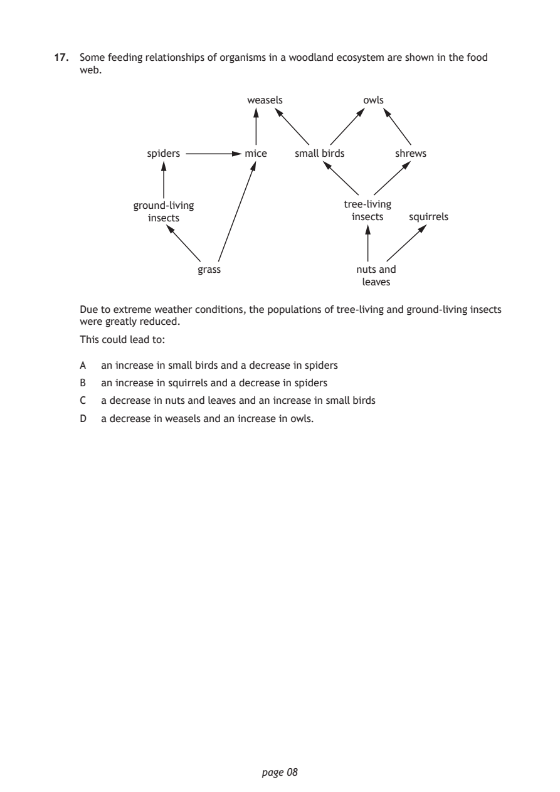
Selectable page text
17. Some feeding relationships of organisms in a woodland ecosystem are shown in the food
web.
weasels owls
spiders mice small birds shrews
ground-living tree-living
insects insects squirrels
grass nuts and
leaves
Due to extreme weather conditions, the populations of tree-living and ground-living insects
were greatly reduced.
This could lead to:
A an increase in small birds and a decrease in spiders
B an increase in squirrels and a decrease in spiders
C a decrease in nuts and leaves and an increase in small birds
D a decrease in weasels and an increase in owls.
page 08PDF page 9
Paper 1, Question 18Paper 1, Question 19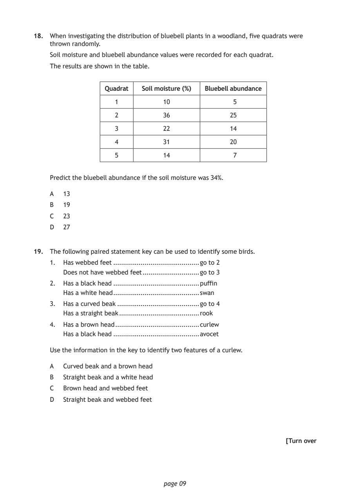
Selectable page text
18. When investigating the distribution of bluebell plants in a woodland, five quadrats were
thrown randomly.
Soil moisture and bluebell abundance values were recorded for each quadrat.
The results are shown in the table.
Quadrat Soil moisture (%) Bluebell abundance
1 10 5
2 36 25
3 22 14
4 31 20
5 14 7
Predict the bluebell abundance if the soil moisture was 34%.
A 13
B 19
C 23
D 27
19. The following paired statement key can be used to identify some birds.
1. Has webbed feet ............................................go to 2
Does not have webbed feet .............................go to 3
2. Has a black head ............................................puffin
Has a white head ............................................swan
3. Has a curved beak ..........................................go to 4
Has a straight beak .........................................rook
4. Has a brown head ...........................................curlew
Has a black head ............................................avocet
Use the information in the key to identify two features of a curlew.
A Curved beak and a brown head
B Straight beak and a white head
C Brown head and webbed feet
D Straight beak and webbed feet
[Turn over
page 09PDF page 10
Paper 1, Question 20Paper 1, Question 21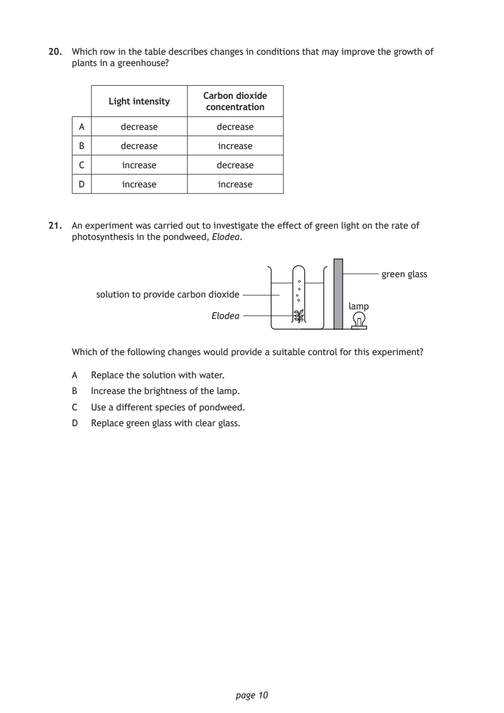
Selectable page text
20. Which row in the table describes changes in conditions that may improve the growth of
plants in a greenhouse?
Carbon dioxide
Light intensity
concentration
A decrease decrease
B decrease increase
C increase decrease
D increase increase
21. An experiment was carried out to investigate the effect of green light on the rate of
photosynthesis in the pondweed, Elodea.
green glass
solution to provide carbon dioxide
lamp
Elodea
Which of the following changes would provide a suitable control for this experiment?
A Replace the solution with water.
B Increase the brightness of the lamp.
C Use a different species of pondweed.
D Replace green glass with clear glass.
page 10PDF page 11
Paper 1, Question 22Paper 1, Question 23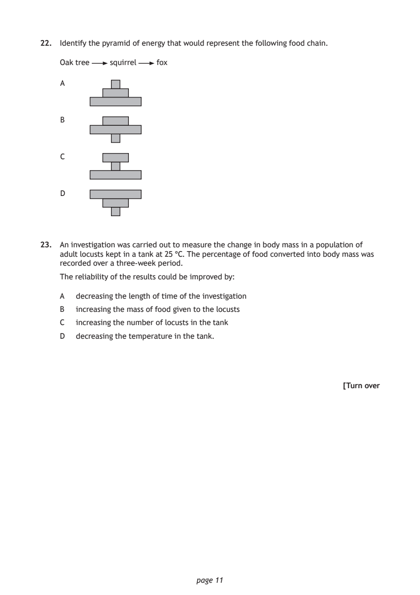
Selectable page text
22. Identify the pyramid of energy that would represent the following food chain.
Oak tree squirrel fox
A
B
C
D
23. An investigation was carried out to measure the change in body mass in a population of
adult locusts kept in a tank at 25 °C. The percentage of food converted into body mass was
recorded over a three-week period.
The reliability of the results could be improved by:
A decreasing the length of time of the investigation
B increasing the mass of food given to the locusts
C increasing the number of locusts in the tank
D decreasing the temperature in the tank.
[Turn over
page 11PDF page 12
Paper 1, Question 24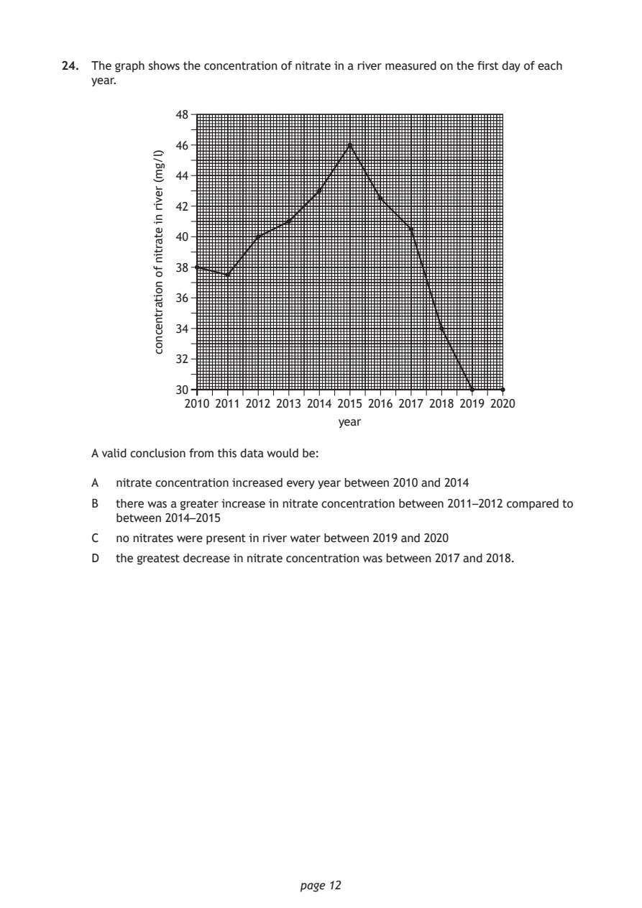
Selectable page text
24. The graph shows the concentration of nitrate in a river measured on the first day of each
year.
48
46
44
42
40
38
36
34
32
30
page 12
)l/gm(
revir
ni
etartin
fo
noitartnecnoc
2010 2011 2012 2013 2014 2015 2016 2017 2018 2019 2020
year
A valid conclusion from this data would be:
A nitrate concentration increased every year between 2010 and 2014
B there was a greater increase in nitrate concentration between 2011–2012 compared to
between 2014–2015
C no nitrates were present in river water between 2019 and 2020
D the greatest decrease in nitrate concentration was between 2017 and 2018.PDF page 13
Paper 1, Question 25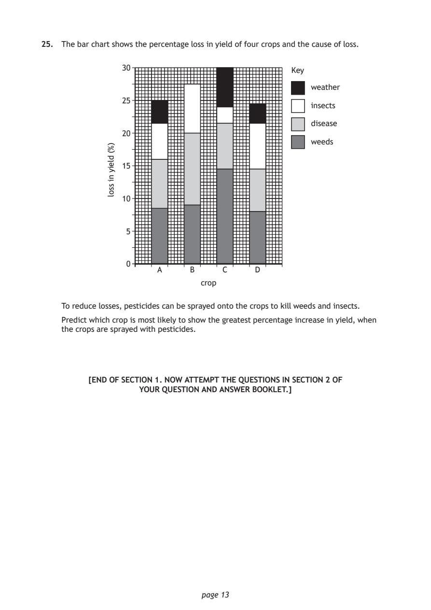
Selectable page text
25. The bar chart shows the percentage loss in yield of four crops and the cause of loss.
30 Key
weather
25
insects
disease
20
weeds
15
10
5
0
A B C D
crop
page 13
)%(
dleiy
ni
ssol
To reduce losses, pesticides can be sprayed onto the crops to kill weeds and insects.
Predict which crop is most likely to show the greatest percentage increase in yield, when
the crops are sprayed with pesticides.
[END OF SECTION 1. NOW ATTEMPT THE QUESTIONS IN SECTION 2 OF
YOUR QUESTION AND ANSWER BOOKLET.]PDF page 14

Selectable page text
[BLANK PAGE]
DO NOT WRITE ON THIS PAGE
page 14PDF page 15

Selectable page text
[BLANK PAGE]
DO NOT WRITE ON THIS PAGE
page 15PDF page 16

Selectable page text
[BLANK PAGE]
DO NOT WRITE ON THIS PAGE
page 16